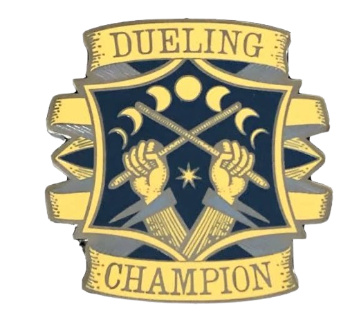

<!DOCTYPE html>
<html lang="ar" dir="rtl"></html>
<html lang="en">
<head>
    <meta charset="UTF-8">
    <meta name="viewport" content="width=device-width, initial-scale=1.0">
    <title>iMGN | Duelling Club</title>
    <link rel="stylesheet" href="styles.css">
    <link rel="icon" href="favicon.ico" type="image/x-icon">
</head>
<body>
    <video autoplay muted loop id="background-video">
        <source src="background-video.mp4" type="video/mp4">
        
    </video>

    <div class="container">
        <div class="header">
            <div class="text-section">
                <h1 class="title">iMGN | Duelling Club</h1>
                <h2 class="subtitle">تخيل | جماعة المبارزة</h2>
            </div>
            
        </div>
        <div class="photo-section">
            
        </div>
        <hr class="divider">
        <div class="game-introduction">
            <h3>مقدمة اللعبة :</h3>
            <p>اللعبة عبارة عن مبارزة بين اثنين من اللاعبين، كل منهما يحاول القضاء على الآخر باستخدام تعويذات سحرية. لكل لاعب مجموعة من النقاط السحرية (MP) والنقاط الصحية (HP). النقاط السحرية (MP) تستخدم لإلقاء التعويذات، بينما النقاط الصحية (HP) تعبر عن الحالة الصحية للاعب. الهدف الأساسي هو تقليل نقاط صحة الخصم إلى 0 أو الفوز بامتلاك نقاط سحرية أو نقاط صحية أعلى بعد 30 دورًا.</p>
            <h3>النقاط الأساسية :</h3>
            <ul>
                <li><strong>النقاط الصحية (HP) :</strong> كل لاعب يبدأ بعدد معين من النقاط الصحية، ويخسر منها عندما يتعرض لهجوم.</li>
                <li><strong>النقاط السحرية (MP) :</strong> كل تعويذة تتطلب عددًا معينًا من النقاط السحرية لاستخدامها. عندما تنفد نقاط الطاقة، يصبح اللاعب غير قادر على استخدام التعويذات.</li>
                <li><strong>استرداد الطاقة :</strong> بعض التعويذات تمكن اللاعب من استرداد نقاط سحرية (MP) لاستمرار المبارزة.</li>
            </ul>
            <h3>كيفية اللعب :</h3>
            <ul>
                <li><strong>الأدوار:</strong> اللعبة تتألف من أدوار، حيث يقوم كل لاعب في دوره بإلقاء تعويذة واحدة أو اتخاذ إجراء استراتيجي.</li>
                <li><strong>إلقاء التعويذات:</strong> يقوم اللاعب باختيار تعويذة من بين التعويذات المتاحة له. لكل تعويذة تأثير محدد سواء كان هجومًا مباشرًا، دفاعًا، شفاءً، أو تأثيرات جانبية.</li>
                <li><strong>إدارة الموارد:</strong> على اللاعب إدارة نقاطه السحرية بحكمة لضمان القدرة على الاستمرار في المبارزة لأطول فترة ممكنة.</li>
            </ul>
            <h3>التعويذات المتاحة :</h3>
            <p>تم تقسيم التعويذات إلى خمس فئات رئيسية: التعويذات الهجومية، تعويذات الدفاع، تعويذات الشفاء، تعويذات الفنون السوداء، وتعويذات التحويل. لكل فئة تأثيرات وأدوار معينة في اللعبة.</p>
            
            <h4>أ. التعويذات الهجومية :</h4>
            <p>تُستخدم لإلحاق الضرر بالخصم وتؤثر بشكل مباشر على نقاط صحته. بعض التعويذات تضاف لها تأثيرات جانبية إضافية مثل الحرق أو التجميد.</p>
            <ul>                <li><strong>Expelliarmus - 10 MP :</strong> يلغي تعويذة دفاعية أو تأثير جانبي للخصم، ويسترد اللاعب 5 نقاط طاقة.</li>
                <li><strong>Depulso - 10 MP :</strong> يسبب 10 نقاط ضرر ويقلل طاقة الخصم بمقدار 5 نقاط.</li>
                <li><strong>Confringo - 20 MP :</strong> يسبب 15 نقاط ضرر ويضيف تأثير حرق يسبب 5 نقاط ضرر إضافية لمدة 3 أدوار، ويقلل طاقة الخصم بمقدار 10 نقاط.
                </li>
                <li><strong>Stupefy - 15 MP :</strong> يسبب 5 نقاط ضرر ويجعل الخصم غير قادر على اللعب في الدور التالي، ويسترد اللاعب 10 نقاط طاقة.</li>
                <li><strong>Bombarda - 25 MP :</strong>  يسبب 20 نقاط ضرر مباشر ويقلل طاقة الخصم بمقدار 15 نقاط.</li>
                <li><strong>Immobulus - 15 MP :</strong> يسبب 5 نقاط ضرر ويشل حركة الخصم لمدة دورين، ويسترد اللاعب 10 نقاط طاقة.</li>
                <li><strong>Flipendo - 10 MP :</strong> يسبب 10 نقاط ضرر ويجعل الخصم غير قادر على استخدام تعويذة هجومية في الدور التالي.</li>
                <li><strong>Petrificus Totalus - 15 MP :</strong> يشل حركة الخصم لمدة دورين، ولا يسبب ضررًا ولكنه يقلل طاقة الخصم بمقدار 10 نقاط.</li>
                <li><strong>Expulso - 20 MP :</strong> يسبب 15 نقاط ضرر مباشر ويسترد اللاعب 5 نقاط طاقة.</li>
                <li><strong>Reducto - 25 MP :</strong> يسبب 20 نقاط ضرر مباشر ويقلل طاقة الخصم بمقدار 10 نقاط.</li>
                <li><strong>Locomotor Mortis - 5 MP :</strong> يمنع الخصم من التحرك لمدة دور واحد ولكنه لا يسبب ضررًا، ويسترد اللاعب 5 نقاط طاقة.</li></ul>
            <h4>ب. تعويذات الدفاع :</h4>
            <p>تُستخدم لحماية اللاعب من الأضرار وتقليل تأثيرات تعويذات الخصم.
            </p>
            <ul>
                <li><strong>Impedimenta - 10 MP :</strong> يسبب 5 نقاط ضرر ويقلل من فعالية تعويذة الخصم الهجومية بنسبة 50% في الدور التالي.</li>
                <li><strong>Protego - 15 MP :</strong> يمنع 15 نقاط ضرر من أي تعويذة هجومية.</li>
                <li><strong>Revulsion Jinx - 5 MP :</strong> يلغي تأثير جانبي (مثل الحرق أو التسمم) ويسترد اللاعب 5 نقاط طاقة.</li>
                <li><strong>Cave Inimicum - 20 MP :</strong> يمنع 20 نقاط ضرر من أي تعويذة هجومية في الدور الحالي، ويسترد اللاعب 10 نقاط طاقة.
                </li>
                <li><strong>Imperturbable Charm - 10 MP :</strong> يمنع تأثيرات جانبية لمدة 3 أدوار ولكنه لا يمنع الضرر المباشر، ويقلل طاقة الخصم بمقدار 5 نقاط.</li>
                <li><strong>Protego Horribilis - 25 MP :</strong> يمنع 25 نقاط ضرر من أي تعويذة هجومية في الدور الحالي، ويقلل طاقة الخصم بمقدار 10 نقاط.</li>
                <li><strong>Protego Totalum - 20 MP :</strong> يمنع 20 نقاط ضرر ويمنع أي تأثير جانبي في الدور الحالي.</li>
                <li><strong>Salvio Hexia - 15 MP :</strong> يمنع 15 نقاط ضرر ويقلل تأثير أي تعويذة جانبية بنسبة 50% في الدور الحالي، ويسترد اللاعب 5 نقاط طاقة.</li>
                
            </ul>
            <h4>ج. تعويذات الشفاء :</h4>
            <p>تُستخدم لاستعادة النقاط الصحية (HP) ومعالجة تأثيرات جانبية.</p>
            <ul>
                <li><strong>Episky - 0 MP :</strong> يعالج 10 نقاط صحية ويسترد اللاعب 20 نقاط طاقة.</li>
                <li><strong>Ferula - 15 MP :</strong> يعالج 15 نقاط صحية ويقلل طاقة الخصم بمقدار 5 نقاط.</li>
                <li><strong>Vulnera Sanentur - 20 MP :</strong> يعالج 20 نقاط HP ويزيل تأثير جانبي واحد، ويسترد اللاعب 10 نقاط طاقة.</li>
                <li><strong>Reparifars - 15 MP :</strong> يعالج 10 نقاط HP ويزيل تأثيرين جانبيين، ويقلل طاقة الخصم بمقدار 5 نقاط.</li>
                <li><strong>ٍSkip - 0 MP :</strong> لجعل اللاعب يستريح ويسترد اللاعب 15 نقاط طاقة.</li>
            </ul>

            <h4>د. تعويذات الفنون السوداء :</h4>
            <p>تتميز بإلحاق الضرر بالخصم بالإضافة إلى تأثيرات جانبية مرعبة.</p>
            <ul>
                <li><strong>Bat Bogey Hex - 15 MP :</strong> يسبب 10 نقاط ضرر ويضيف تأثير نزيف يستمر لمدة 2 دورين (5 نقاط ضرر إضافي).</li>
                <li><strong>Curse of the Bogies - 20 MP :</strong> يسبب 15 نقاط ضرر ويجعل الخصم غير قادر على استخدام تعويذات دفاعية لمدة 2 دورين.</li>
                <li><strong>Jelly Brain Jinx - 15 MP :</strong> يسبب 5 نقاط ضرر ويجعل الخصم غير قادر على استخدام تعويذات هجومية لمدة 2 دورين، ويقلل طاقة الخصم بمقدار 5 نقاط.</li>
                <li><strong>Jelly Fingers Jinx - 10 MP :</strong> يسبب 5 نقاط ضرر ويقلل دقة تعويذات الخصم بنسبة 50% لمدة 2 دورين.</li>
                <li><strong>Pimple Jinx - 5 MP :</strong> يسبب 5 نقاط ضرر ويزيد من ضرر أي تعويذة هجومية يستخدمها الخصم بنسبة 25% في الدور التالي (زيادة الضرر تصيب متلقي التعويذة).</li>
                
            </ul>
            <h4>هـ. تعويذات التحويل :</h4>
            <p>تقوم بتحويل الخصم أو البيئة المحيطة بطرق مختلفة تؤثر على سير المباراة.</p>
            <ul>
                <li><strong>Arrow Shooting Spell - 10 MP : </strong> يسبب 10 نقاط ضرر مباشر.</li>
                <li><strong>Ebubilo Jinx - 15 MP :</strong> يسبب 5 نقاط ضرر ويمنع الخصم من استخدام تعويذات هجومية لمدة 2 دورين.</li>
                <li><strong>Fire Rope - 20 MP :</strong> يسبب 15 نقاط ضرر ويضيف تأثير حرق يسبب 5 نقاط ضرر إضافية لمدة 2 دورين، ويقلل طاقة الخصم بمقدار 5 نقاط.</li>
                <li><strong>Whip Spell - 15 MP :</strong> يسبب 10 نقاط ضرر ويجعل الخصم غير قادر على الدفاع في الدور التالي، ويسترد اللاعب 5 نقاط طاقة.</li>
                <li><strong>Serpensortia - 10 MP :</strong> يستدعي أفعى تسبب 5 نقاط ضرر إضافية لمدة 3 أدوار.</li>
                <li><strong>Melofers - 15 MP :</strong> يحول الخصم إلى ثمرة لمدة دور واحد، يمنعه من اللعب ويقلل طاقة الخصم بمقدار 5 نقاط.</li>
                <li><strong>Obscure - 10 MP :</strong> يسبب 5 نقاط ضرر ويجعل الخصم غير قادر على استخدام تعويذات شفاء لمدة 2 دورين.</li>
                <li><strong>Incarcerous Spell - 15 MP :</strong> يشل حركة الخصم لمدة دور واحد ولكنه لا يسبب ضررًا، ويسترد اللاعب 5 نقاط طاقة.</li>
                
            </ul>
            <h3>قواعد إضافية :</h3>
            <ul>
                <li><strong>حد الاستخدام :</strong> يمكن استخدام التعاويذ الهجومية مرة واحدة فقط كل 3 أدوار.</li>
                <li><strong>الحد الأقصى لنقاط الطاقة :</strong> لا يمكن استرداد أكثر من 150 نقطة طاقة.</li>
                <li><strong>استنفاد الطاقة :</strong> إذا وصل أحد اللاعبين إلى 0 نقطة طاقة ولم يستطع استردادها في الدور التالي، يخسر المباراة حتى لو كانت نقاط الصحة لا تزال موجودة.</li>
                <li><strong>نظام الوقت :</strong> بعد 30 دورًا، تنتهي المباراة بغض النظر عن النقاط الصحية المتبقية، ويفوز اللاعب الذي يمتلك نقاط طاقة أو نقاط صحة أعلى.</li>
            </ul>
            <h3>الاستراتيجيات :</h3>
            <ul>
                <li><strong>التوازن بين الهجوم والدفاع :</strong> يجب على اللاعبين اختيار التعويذات بحكمة وتوازن بين الهجوم والدفاع لضمان البقاء في اللعبة لأطول فترة ممكنة.</li>
                <li><strong>إدارة النقاط السحرية :</strong> من المهم مراقبة النقاط السحرية والتأكد من عدم نفادها بسرعة.</li>
                <li><strong>استغلال التأثيرات الجانبية :</strong> التأثيرات الجانبية مثل الحرق أو الشلل يمكن أن تكون مفتاح الفوز إذا استخدمت بشكل صحيح.</li>
            </ul>
            <h3>خاتمة :</h3>
            <p>اللعبة تعتمد على الذكاء والتخطيط المسبق، حيث يجب على اللاعبين التفكير في الخطوات المستقبلية والتأثيرات المحتملة لكل تعويذة. مع نظام الأدوار المحدد والحد الزمني، اللعبة.</p>
            <h3>ملحوظات :</h3>
            <ul>
                <li> لا يسمح باستخدام اي تعويذات محرمة وفي حالة استخدام واحدة يتم إقصاء الفاعل فوراً</li>
                <li>لا يسمح بتكرار تعاويذ العدو مرة أخرى عليه وإذا وجد تكرار للتعاويذ يحق للحكم إقصاءه فور</li>
                <li>للحكم كامل الحرية في المبارزة حيث بامكانه إقصاء من يشاء إذا رأي شيئاً مخالفا او تنفيذ عقوبة يراها صحيحة</li>
            </ul>
            <hr class="divider">
            <h4>هذه النسخه ليست النسخة النهائية من اللعبة وإنما هي مجرد نسخة تجريبية</h4>
            <h5>هذة النسخة دائما قيد التطوير لذالك يجب عليك الاطلاع دائما عليها حيث انه يمكن تغير بعض خصائص التعاويذ</h5>
        </div>
    </div>
    <script src="script.js"></script>
</body>
</html>
